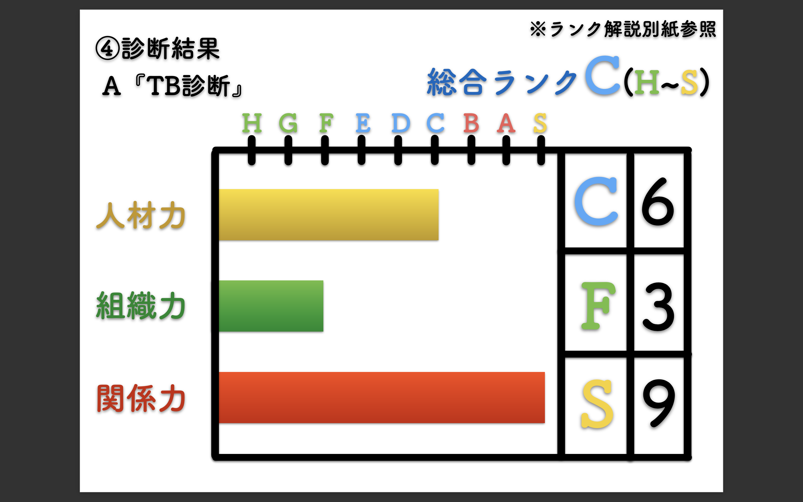

美容師マネジメント診断
診断する
お客様状況の確認
お客様のご職業を選択ください
オーナー（経営者）
プレイングオーナー
経営幹部
店長
その他
TB診断
TB診断
全ての回答から総合的に診断致します。１-１５の質問に回答お願い致します。
13.自分が働いているサロンや組織にいて『楽しい』『嬉しい』『充実している』などを感じるキャリアアップを感じているか?
1.自分が働いているサロンや組織で、キャリアアップを感じた事がない
2.自分のキャリアアップや充実感などを過去に感じた経験がある
3.自分のキャリアアップや充実感などを現在も感じている
4.自分だけでなくメンバーもキャリアアップや充実感などを感じている
5.新たなキャリアアップをスタッフと一緒に構築することが出来る
6.自分だけでなくて、スタッフも使い分けている状態
TB診断結果
